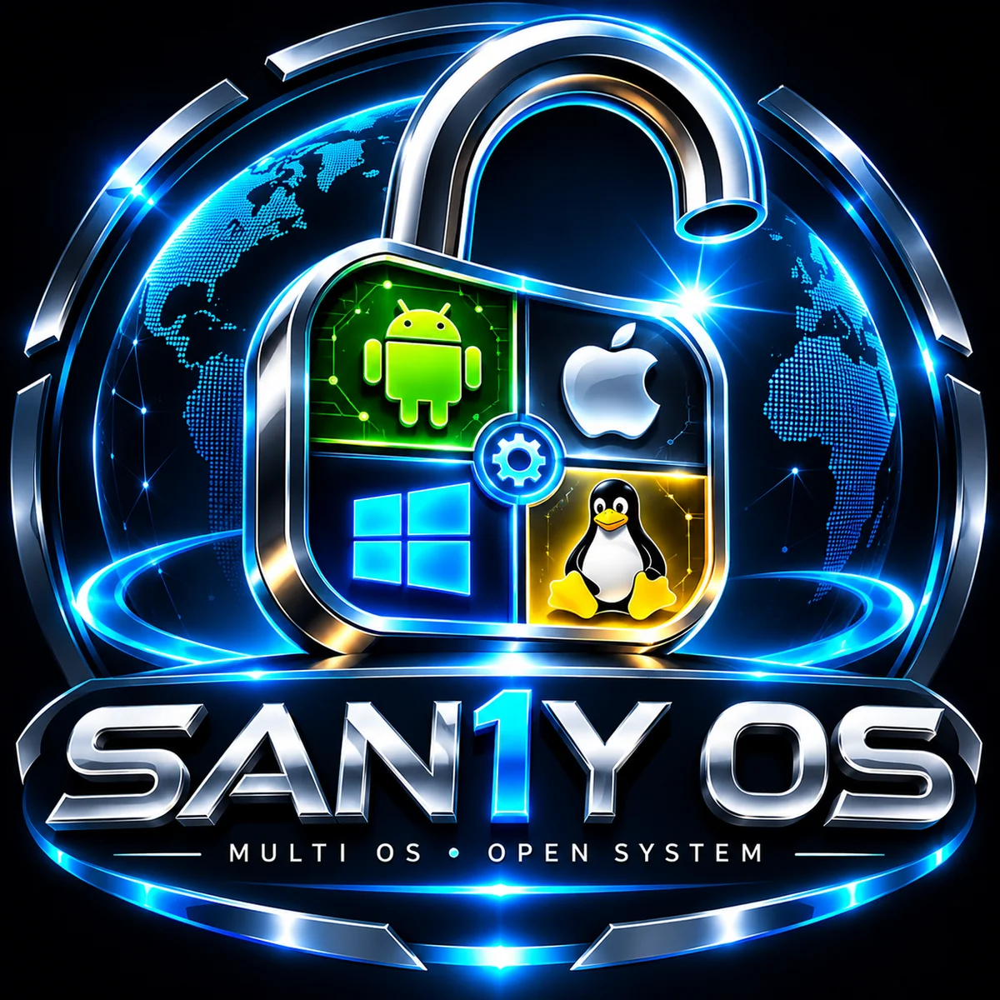

Style Studio Pro
Individuelle Farben, transparente Oberflächen, Icons und Dock-Anpassung.
In Entwicklung
Ein Linux-basiertes Betriebssystemprojekt mit eigener Designsprache, modularen Werkzeugen und der Vision einer flexiblen, individuell gestaltbaren Desktop-Erfahrung.
Visuelle Entwürfe für Bootscreen, Anmeldung und Desktop. Diese Bilder sind Designvorschauen und keine Belege für bereits vollständig implementierte Funktionen. Antippen zum Vergrößern.
Die Funktionsbereiche befinden sich in unterschiedlichen Entwicklungsphasen. Die Kennzeichnung zeigt, was bisher vorbereitet ist und was als Ziel geplant bleibt.
Individuelle Farben, transparente Oberflächen, Icons und Dock-Anpassung.
In EntwicklungGit-Werkzeuge, Codeeditoren und Projektverwaltung.
Teilweise vorbereitetLinux, Windows und Android sowie Apple-Integration: iPhone-Anbindung, Mac Bridge und Zusammenarbeit mit macOS. Kompatibilität wird einzeln geprüft.
Teilweise erprobt / weitere Integration geplantIsolierte Analyse-, Diagnose- und Sicherheitstestumgebungen.
GeplantLokale Datenträger, NAS und Cloud mit Wiederherstellungsoptionen.
GeplantHardwareüberwachung und nachvollziehbare Reparaturvorschläge.
GeplantSAN1Y OS entwickelt eine modulare Brücke zwischen Geräten und Softwarewelten. Unterstützungsumfang und Funktionsfähigkeit hängen von Hardware, Lizenzen und Kompatibilitätstests ab.
Ubuntu 24.04 und Xfce bilden die dokumentierte Systembasis.
EntwicklungsgrundlageWine, Bottles, virtuelle Maschinen und Waydroid sind Kandidaten für geeignete Geräte.
Geplant / zu prüfenFrühe Mac-Bridge-Funktionen wurden getestet. Geräteverbindung und sichere iPhone-Freigabe sind Entwicklungsziele. macOS-Apps laufen nicht nachgewiesen nativ in SAN1Y OS.
Teilweise getestet / ForschungEntdecke die Designs von SAN1Y OS. Wähle die Vorschau aus, die dich interessiert. Es handelt sich um Konzeptbilder, nicht um ein laufendes Betriebssystem im Browser.
SAN1Y OS / VISUAL EXPERIENCE

Desktop-Konzept – die futuristische Benutzeroberfläche von SAN1Y OS.
Alle Konzeptbilder ansehen →Animations- und Desktop-Vorschau. Keine Live-Demo oder bestätigte Funktion des Betriebssystems.
Keine öffentliche stabile ISO-Freigabe bestätigt. Downloads werden erst angeboten, sobald ein Build ausreichend geprüft und zur Veröffentlichung freigegeben wurde.
Die vollständigen Informationen aus der README: technische Grundlagen, Design, Funktionen, Builds, Sicherheitsregeln, Roadmap und Kontakt. Tippe auf ein Kapitel, um es zu öffnen. Stand der Dokumentation: 16. November 2026, Master-Backup 249.
SAN1Y OS ist ein eigenständiges Betriebssystemprojekt auf Linux-Basis. Das Ziel ist, eine moderne, schnelle und anpassbare Arbeitsumgebung zu schaffen, die hochwertige Gestaltung, Sicherheit, Entwicklerwerkzeuge und – soweit technisch möglich – Anwendungen verschiedener Plattformen zusammenführt.
Im Mittelpunkt stehen Stabilität, Geschwindigkeit, Sicherheit, Datenschutz und individuelles Design. Nicht die Anzahl installierter Programme zählt, sondern eine zuverlässig funktionierende, nachvollziehbar getestete Integration.
Wichtiger Hinweis: SAN1Y OS befindet sich in Entwicklung. Die auf der Webseite gezeigten Oberflächen und Bildschirme sind teilweise Designkonzepte und kein Beleg für bereits vollständig implementierte Funktionen. Es gibt zum Stand dieses Dokuments keine als stabil freigegebene öffentliche ISO und keinen abschließend getesteten Installationsablauf.
| Bereich | Derzeitige Grundlage / Ziel |
|---|---|
| Basis | Ubuntu 24.04 LTS „Noble“ |
| Architektur | x86_64 |
| Desktop | Xfce als bisherige Arbeitsgrundlage |
| Oberfläche | Eigenständiges SAN1Y-Design, in Entwicklung |
| Sprache | Deutsch als geplante Standardsprache; noch nicht überall umgesetzt |
| Terminal | Xfce Terminal im SAN1Y-System |
| Editionen | Standard und Developer Edition vorgesehen |
| Virtualisierung | Schwerpunkt QEMU/KVM |
| Boot | BIOS/UEFI-Bootkonzepte und Tests in früheren Builds |
| Installation | Langfristig sicherer Multiboot neben bestehenden Systemen |
Die Designrichtung heißt Cyber / Dark Liquid Glass: dunkle, möglichst transparente Fenster, elektrische blaue Akzente, silberne Menüs, abgerundete Oberflächen und dezente Animationen.
Vorgesehene Farbpalette:
| Element | Farbe |
|---|---|
| Hintergrund | #101114 |
| Fenster | #1C1D22 |
| Panels | #25272D |
| Menüschrift | #C0C5CE |
| Terminal | Hintergrund #080C12, Schrift #78FF83 |
| Akzent | Leuchtendes Blau |
Designziele:
Aktueller Stand: Die visuellen Vorlagen zeigen die beabsichtigte Richtung. Vollständige Umsetzung und Performancetests stehen noch aus.
Eine grafische Designzentrale mit Farbkreis, HEX-Eingabe, Themes, Import/Export, Transparenz-, Icon-, Cursor-, Schrift- und Dock-Einstellungen, Vorschau und Rückgängig-Funktion.
Stand: Ein früher Style Studio V1-Starter auf Bash/xmessage-Basis wurde entwickelt und syntaktisch geprüft. Die geplante High-End-GTK-Version ist noch nicht als funktionsfähig bestätigt. Die Akzentfarb-App startet derzeit nicht zuverlässig.
Geplant sind Git-Repositories, Klonen, ZIP-Import, Codeeditor, Projektverwaltung, Build-Pipelines, Abhängigkeitsprüfung sowie ein App Maker, Website-zu-App-Konverter und Programmiersprachen-Konverter.
Stand: Git, SSH und Mac-Bridge-Funktionen wurden in früheren Live-Systemen getestet; sechs zusätzliche Git-Webstarter sind laut Projektdokumentation eingebunden. Das ist keine bestätigte Installation sämtlicher Git-Plattformserver.
Stand: Git, SSH und Mac-Bridge-Funktionen wurden früher getestet. Breite Windows-, Android- und Apple-Kompatibilität ist derzeit keine zugesicherte Funktion. Windows Store und winget wären nur in einer passenden Windows-Umgebung nutzbar.
QEMU/KVM steht im Zentrum. Geplant sind Windows- und Android-VMs sowie ein isoliertes Kali Security Lab für autorisierte Sicherheitsprüfungen und Lernen. Historische BackTrack-Software wird nicht als ungeschützte Produktivumgebung eingesetzt.
Stand: Virtualisierungs- und Boot-Tests wurden durchgeführt; neuere grafische Tests und Performanceoptimierungen sind offen.
Geplant sind lokale KI-Modelle mit geeigneten Laufzeiten wie Ollama/llama.cpp, KI-Chat, Codeassistenz, Bild-/Videowerkzeuge, Prompt-zu-Skript, Video-zu-PDF und Modellverwaltung.
Stand: Forschungs- und Integrationsziele; die genannten externen Projekte sind nicht automatisch installiert oder getestet.
Vorgesehen sind Backups auf interne/externe Datenträger, USB, NAS, private Server und geeignete Cloud-Dienste. Geplant sind inkrementelle und verschlüsselte Backups, Snapshots, Systemabbilder, Restore-Assistenten und echte Wiederherstellungstests.
Geplant sind Hardwareüberwachung, Paket-/Konfigurationsdiagnose, Integritätsprüfungen, Firewall, Verschlüsselung, Sicherheitswarnungen und reversible Reparaturvorschläge. Persönliche Dateien sollen niemals ungefragt gelöscht werden.
Geplant sind Benutzerkonten, Passwort/PIN-Optionen, ein gestalteter Sperrbildschirm und die Erforschung einer iPhone-gestützten Freigabe. Face ID über iPhone ist bislang ein Entwicklungsziel, keine funktionierende Linux-Anmeldemethode in SAN1Y OS.
Langfristiges Ziel ist eine geprüfte Installation neben Windows oder Linux, mit Backup, Prüfung der Partitionstabelle, Schutz bestehender Bootloader und ausdrücklicher Zustimmung für riskante Änderungen. Eine eigene signierte Update-Infrastruktur ist vorgesehen.
Stand: Ein realer, vollständig getesteter Multiboot-Installer und ein fertiger eigener Updatekanal sind nicht bestätigt.
Die Projektsicherung dokumentiert unter anderem diese Entwicklungsstufen:
| Build / Meilenstein | Dokumentierter Stand |
|---|---|
| Prototyp 135 | Frühe ISO |
| GUI-Test 152 | Grafischer ISO-Test |
| Dark 174 / 179 | Desktop- und Design-Tests |
| Developer 208 | Früher UEFI-QEMU-Test nachgewiesen |
| Developer 221 | BIOS-/UEFI-Tests laut Nutzer erfolgreich |
| Developer 230 | ISO erstellt, BIOS-/UEFI-Booteinträge vorhanden; vollständige Grafik-/UEFI-Gasttests nicht abschließend dokumentiert |
| Rootfs 234 | Auf dem Entwicklungsrechner als vorhanden bestätigt |
| Developer 247 | Build vorbereitet; tatsächlicher Dateibestand, SHA256 und Bootfähigkeit noch nicht verifiziert |
Technische Referenz für Build 230: Kernel 6.8.0-149-generic, SquashFS 4.0 mit XZ-Komprimierung, BIOS-/UEFI-El-Torito-Einträge; Live- und Diagnose-Menü vorhanden. Der dokumentierte SHA256-Wert der ISO lautet:
SAN1Y-OS-DEV-230.iso
1bdcd828788241d1b34edf3e87bfe28be6fb70b4b2fe12cd7ce109a9d5d1668b
Der Hash stammt aus der Projektsicherung. Er wurde nicht im Zuge dieser README unabhängig gegen eine lokale ISO geprüft.
| Priorität | Offener Punkt |
|---|---|
| P0 | QEMU-/Simulationsleistung verbessern |
| P0 | Deutsche Sprache konsistent umsetzen |
| P0 | Nicht startende Akzentfarb-App reparieren |
| P0 | Fehlendes SAN1Y-Systemsymbol beheben |
| P0 | Bootgrafik, Animation, Login und Sperrbildschirm implementieren und testen |
| P0 | Terminal-Gast-Zwischenablage und GUI-Tests verbessern |
| P0 | ISO 247 auf Existenz, SHA256 und Bootverhalten prüfen |
| P1 | Farbkreis, Icons, Neonordner, Dock, Widgets und Softwaremanager weiterentwickeln |
| P1 | Sichere Systemdiagnose und Auto-Fix vorbereiten |
Die Reihenfolge ist geplant, keine Zusage für Veröffentlichungstermine.
Bei SAN1Y OS gelten folgende Projektprinzipien:
Screenshots, Bootgrafiken, das Schloss-Logo und die Desktopkonzepte sind auf der Projektwebseite zu sehen. Sie zeigen die Designvision. Der technische Implementierungsgrad einzelner dargestellter Funktionen kann davon abweichen.
Aktuell kein allgemein freigegebener stabiler Download. Bitte verwende Entwicklungs-ISOs nicht ungeprüft auf produktiven Systemen und führe keine Partitionierungs- oder Bootloader-Änderungen ohne Sicherung durch.
Sobald eine Version hinsichtlich Bootverhalten, Prüfsumme, Sicherheit, Installation und Wiederherstellung ausreichend geprüft ist, können offizielle Downloadinformationen und Prüfsummen hier ergänzt werden.
SAN1Y OS wird von Sascha Santori entwickelt. Für konstruktive technische Zusammenarbeit, Tests, Designideen und Projektanfragen:
Spenden sind freiwillig und begründen weder einen Anspruch auf Funktionen noch auf einen Veröffentlichungstermin.
Für dieses Projekt wurde im dokumentierten Stand keine allgemeine Open-Source-Lizenz festgelegt. „Open System“ ist der Projektname beziehungsweise die Ausrichtung und stellt keine automatische Freigabe sämtlicher Dateien zur Nachnutzung dar. Vor Beiträgen, Forks oder Weiterverteilung sind die tatsächlich im Repository ausgewiesenen Lizenzbedingungen zu prüfen. Rechte an verwendeten Fremdprogrammen, Marken und Logos verbleiben bei den jeweiligen Rechteinhabern.
<div align="center">
SAN1Y OS — NEXT LEVEL
Eine Vision. Ein eigenes Betriebssystem. Schritt für Schritt zur stabilen Umsetzung.
</div>
Feedback zu Oberfläche, Stabilität, Barrierefreiheit und Kompatibilität kann über GitHub Discussions öffentlich besprochen oder per E-Mail eingereicht werden. Für Umfragen steht die GitHub-Kategorie „Polls“ bereit; ein separates Abstimmungssystem auf der Webseite existiert nicht.
Unterstützernamen werden ausschließlich mit ausdrücklicher Zustimmung eingetragen. Keine automatische Veröffentlichung von Namen, Spendenbeträgen oder Zahlungsdaten.
Gesucht werden Hardware-Testpartner, Hersteller, Firmware-/Treiberentwickler und Unternehmen mit Erfahrung in der Laptopentwicklung. Eine offizielle SAN1Y-OS-Hardware ist noch nicht veröffentlicht.
Die Angaben beschreiben den dokumentierten Projektstand, keine unabhängige Prüfung des aktuellen Build-Rechners. Designbilder sind Konzeptvorschauen.

SAN1Y OS steht für die Idee, moderne Gestaltung, technische Freiheit und flexible Systemwerkzeuge in einem eigenen Linux-basierten Projekt zu vereinen.
Ein Projekt. Eine Vision. NEXT LEVEL.
Design · Linux · Multi-OS · Community
SAN1Y OS wird weiterentwickelt. Ein öffentlicher Systemdownload ist noch nicht freigegeben.
GitHub-Profil besuchenDu kannst Ideen einbringen, bei der Entwicklung mitdiskutieren, dich für spätere Tests interessieren oder eine Hardware-Partnerschaft vorschlagen. Die Diskussionen werden kostenlos über GitHub geführt; für eigene Beiträge wird ein GitHub-Konto benötigt.
Neue Funktionen, Designideen und Wünsche gemeinsam diskutieren.
Ideen einreichen ↗Auf GitHub die Kategorie „Ideen & Verbesserungsvorschläge“ wählen.
Für Laptop-Hersteller, Hardwareentwickler, Treiberexperten und Unternehmen.
Hardware-Community öffnen ↗Auf GitHub die Kategorie „Hardware & Partnerschaften“ wählen.
Für zukünftige Tests, Fehlerbeobachtungen und Hardware-Kompatibilität.
Testbereich öffnen ↗Auf GitHub die Kategorie „Beta-Testing & Fehlerberichte“ wählen.
Entwicklungsphasen, bekannte Probleme und kommende Meilensteine besprechen.
Roadmap diskutieren ↗Auf GitHub die Kategorie „Entwicklung & Roadmap“ wählen.
Hinweis: Die Kategorieauswahl erfolgt nach dem Öffnen bei GitHub. Eine Anmeldung ist für das Schreiben und Abstimmen erforderlich. Bereits vorhandene Diskussionen lassen sich öffentlich lesen.
Ideen, Fehlerberichte und praktische Vorschläge sind willkommen. Verbesserungen kannst du öffentlich über GitHub Discussions oder weiterhin vertraulich per E-Mail einreichen. Die Webseite speichert selbst keine Eingaben.
Wünsche zu Design, Bedienung, Geschwindigkeit, Barrierefreiheit, Programmen und Gerätekompatibilität sind besonders hilfreich.
Verbesserung vorschlagenÖffnet dein E-Mail-Programm mit einer Vorlage. Bitte keine Passwörter oder sensiblen Logdateien versenden.
Die öffentliche Unterstützer-Wall befindet sich weiter unten im Abschnitt „Spenden & Kontakt“. Privatpersonen und Firmen werden dort nur mit Einwilligung genannt.
Als Unterstützer genannt werdenDie Nennung ist freiwillig, erfolgt erst nach ausdrücklicher Zustimmung und unabhängig von der Spendenhöhe. Änderungen oder Entfernung sind per E-Mail möglich. Keine automatische PayPal-Anbindung.
SAN1Y OS sucht Kontakte für Hardwaretests, Kompatibilitätsprüfungen, Treiber und langfristig die Entwicklung beziehungsweise Anpassung von Laptops für SAN1Y OS.
Gesucht sind Leihgeräte, Testmöglichkeiten, technische Informationen oder sachbezogene Unterstützung. Es gibt noch kein bestätigtes offizielles SAN1Y-Notebook.
Gesucht werden Laptop-Hersteller, ODM/OEM-Unternehmen, Hardwareentwickler und Integrationspartner für Gehäuse, Firmware, Linux-Treiber, Kühlung und Fertigung.
Hardware-Partnerschaft anfragenKontakt: san1y777@icloud.com. Eine Zusammenarbeit ist noch nicht vereinbart.
Du möchtest die unabhängige Entwicklung unterstützen oder eine Zusammenarbeit vorschlagen? Hier findest du die passenden Kontaktmöglichkeiten.
Freiwillige Spenden helfen bei der Weiterentwicklung von SAN1Y OS. Es besteht keine Verpflichtung zu spenden.

PayPal-QR-Code scannen oder den Link öffnen.
Für Projektideen, technische Zusammenarbeit, Feedback oder andere Anfragen rund um SAN1Y OS.
E-Mail schreibenBitte keine Passwörter, vertraulichen Daten oder Zugangscodes per E-Mail senden.
Danke an alle, die SAN1Y OS mit Feedback, Tests, Technik oder freiwilligen Spenden unterstützen. Namen und Firmenlogos erscheinen hier nur nach ausdrücklicher Freigabe.
Noch keine Namen zur öffentlichen Nennung freigegeben.
Ein Name oder Alias wird erst nach deiner Zustimmung veröffentlicht.
Noch keine Unternehmen zur öffentlichen Nennung freigegeben.
Logos und Verlinkungen erst nach Freigabe durch die jeweiligen Rechteinhaber.
Die Nennung ist freiwillig und keine Gegenleistung für eine Spende. Es werden keine Beträge, Zahlungsdaten oder PayPal-Kontodaten veröffentlicht. Lösch- oder Änderungswünsche bitte an san1y777@icloud.com senden. Die Liste wird manuell gepflegt.